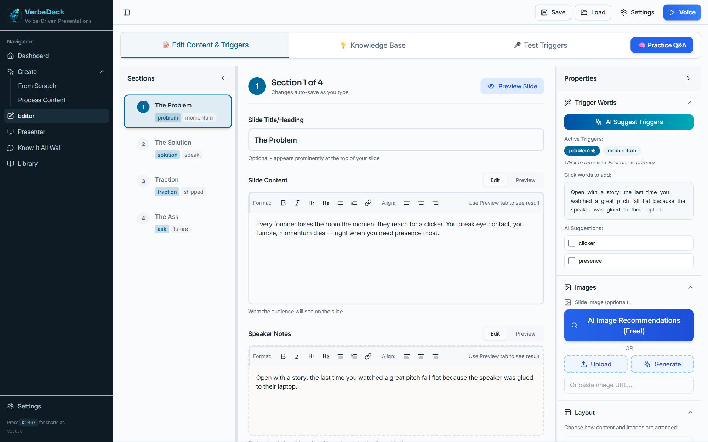
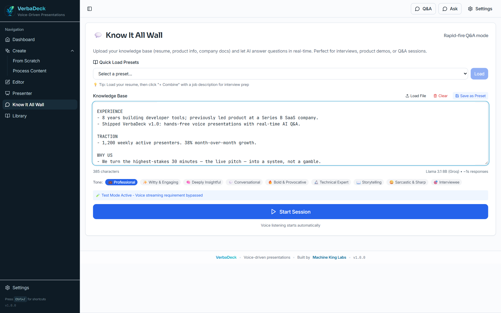
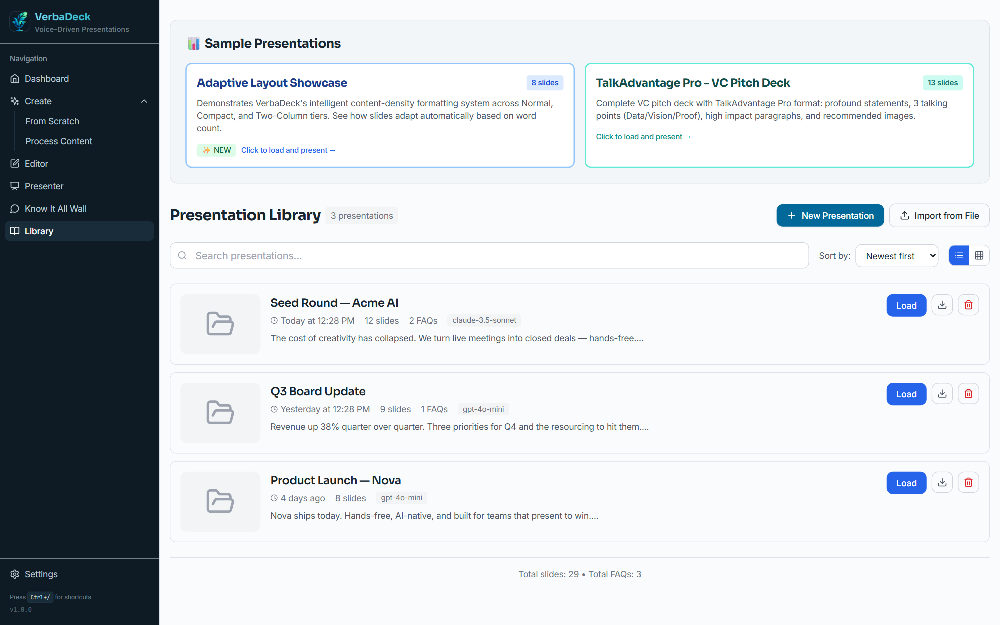

Say a word. The slide moves.
Set trigger words per slide and just talk. VerbaDeck listens with real-time transcription and advances exactly when you hit your line — with a debounce so it never double-fires.
- Multi-trigger & plural-aware matching
- "Back" command + arrow-key fallback
- A countdown buffer so you finish your sentence

AI answers the hard questions — from your deck.
When the room asks something, VerbaDeck detects the question and drafts an answer grounded in your own slides and knowledge base, in the tone you choose. Never get caught flat-footed in Q&A again.
- Question detection while you present
- Answers grounded in your content, 8 tones
- Anticipate the top questions before you start

A cinematic audience view. A cockpit for you.
The audience sees a clean, dark, projector-ready slide. You see a control room: timer, trigger cues, the next slide, and a live preview — synced instantly over your second monitor.
- Dual-monitor sync over BroadcastChannel
- Drive it from your phone via QR remote
- Adaptive layouts that fit any slide

Generate, import, or rehearse.
Start from a topic and let AI build the deck, paste a script or drop in a PowerPoint, or load a resume and rehearse for the toughest questions. Everything stays on your machine.
- AI deck generation with slide options
- PowerPoint import (text + images)
- 50+ models via OpenRouter, your own keys
